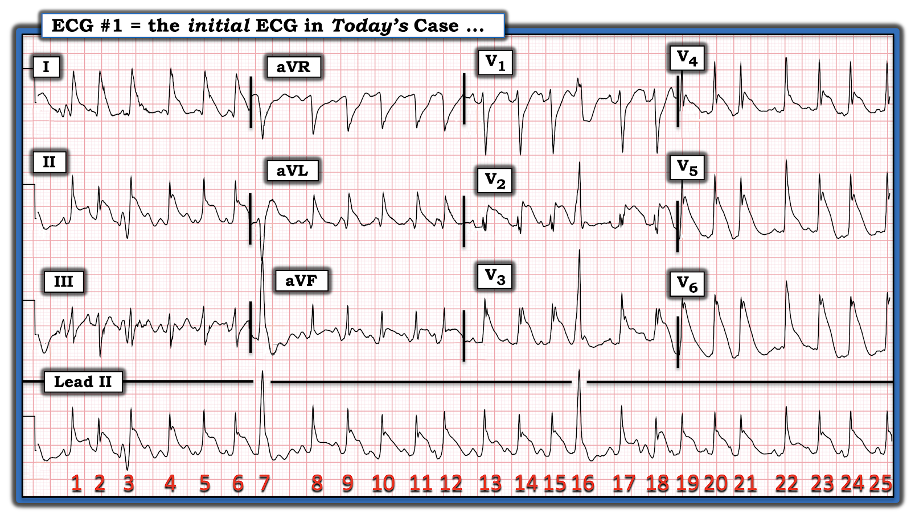
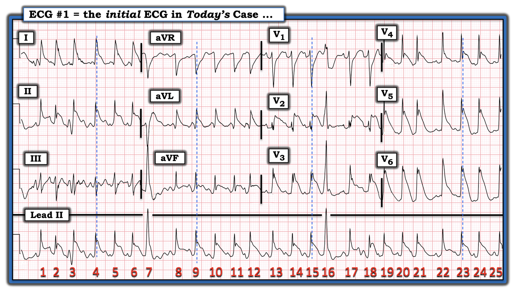
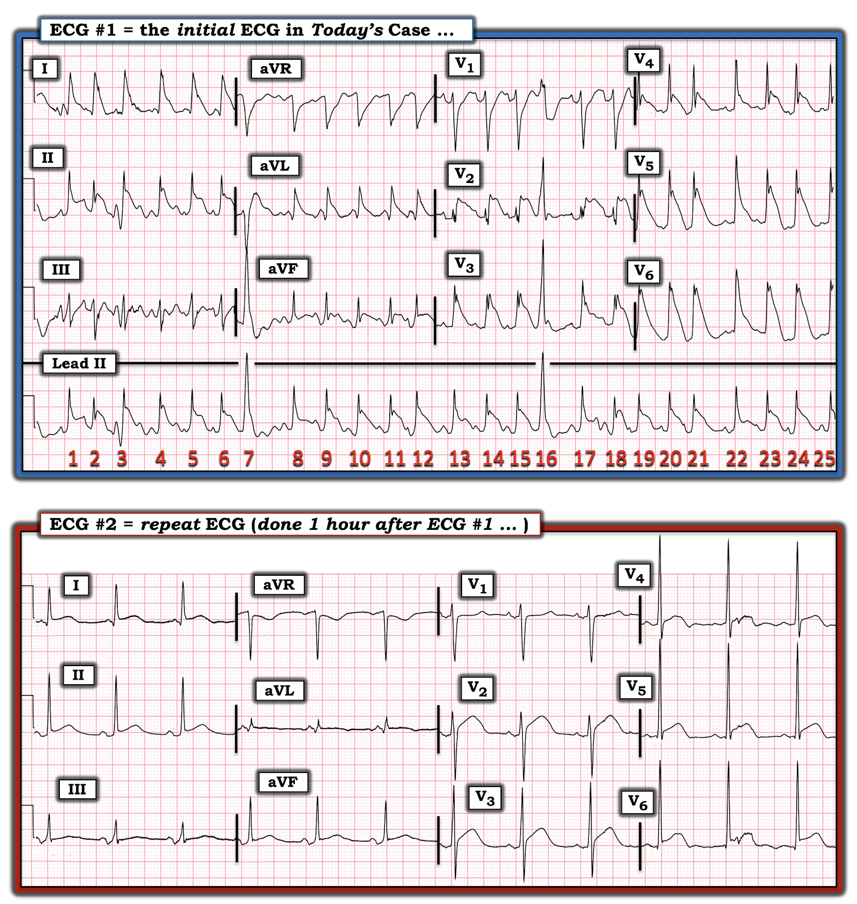
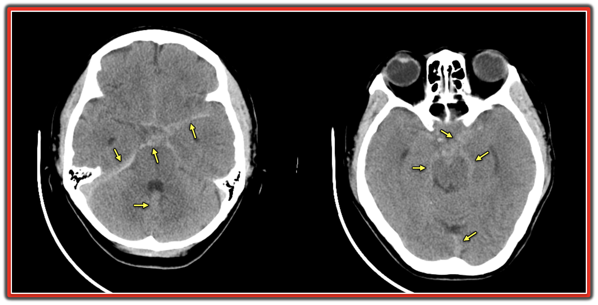

ECG Blog #299 — Không đáp ứng và nhồi máu cơ tim cấp?
Điện tâm đồ trong Hình-1 là của một phụ nữ ở độ tuổi 60. Bệnh nhân mất ý thức đột ngột.
CÂU HỎI:
- Có nên kích hoạt phòng thông tim (cath lab) không?
- Nhịp là gì?


SUY NGHĨ CỦA TÔI về điện tâm đồ ở Hình-1:
Bệnh nhân không đáp ứng vào thời điểm ghi điện tâm đồ #1. Trước hết, tôi xem nhịp. Theo ECG Blog #185 — Theo cách tiếp cận Ps, Qs, 3R:
- Nhịp ở chuyển đạo II dài phía dưới bản ghi nhanh và không đều.
- Nhát #7 và 16 rõ ràng rộng hơn và trông khác hẳn các nhát còn lại trên bản ghi. 2 nhát này là PVC (ngoại tâm thu thất – Premature Ventricular Contractions).
- Mặc dù lúc đầu tôi nghĩ phức bộ QRS rộng ở mọi chuyển đạo — nhưng khi xem kỹ hơn (trừ nhát #7 và 16) — các đường chấm XANH thẳng đứng mà tôi thêm vào các chuyển đạo ghi đồng thời của từng nhóm chuyển đạo (trong Hình-2) — xác nhận rằng phức bộ QRS của mọi nhát còn lại trên bản ghi này đều hẹp. Thay vào đó — chính sự hiện diện của ST chênh lên dạng "vây cá mập" (Shark-Fin) rõ rệt đã khiến QRS bị tưởng nhầm là rộng — trong khi thực ra QRS hẹp (xem ECG Blog #265 — để ôn lại ST chênh lên dạng vây cá mập).
- Theo cách tiếp cận Ps, Qs, 3R — việc còn lại là phải xác định hoạt động nhĩ. Một lần nữa — ấn tượng ban đầu của tôi rằng có sóng P đi trước nhiều phức bộ QRS không hẳn chính xác. Chính sự hiện diện của nhiễu đường nền thô đã khiến việc đánh giá nhịp trên bản ghi này khó khăn đến vậy (nhiễu này rõ nhất ở chuyển đạo III và aVF — nhưng có mặt ở mức độ nào đó trên toàn bộ bản ghi).
- THÚ NHẬN: Tôi vẫn không chắc nhịp trên điện tâm đồ #1 là gì. Một số nhát (tức là nhát #17 — nhất là nếu bạn nhìn nhát này ở chuyển đạo V1 ghi đồng thời) — rõ ràng trông như có sóng P xoang đi trước với khoảng PR bình thường (Nhịp ở chuyển đạo V1 trông giống nhịp nhanh xoang hơi không đều với một PVC ở nhát #16).
- Dù vậy — nhịp tổng thể ở chuyển đạo II dài rõ ràng không đều — và dường như có "sóng rung" thô trong khoảng ngưng sau ngoại tâm thu giữa nhát #7 và 8 (cũng như trong các khoảng R-R ngắn hơn sau nhát #3 và sau nhát #17 trên dải nhịp chuyển đạo II dài). Dường như còn có thêm sóng rung thô cộng với nhiễu ở chuyển đạo III.
- ĐIỀU CỐT LÕI: Tôi nghi ngờ nhịp trên điện tâm đồ #1 là AFib (rung nhĩ – Atrial Fibrillation) nhanh. Dù vậy, ngay cả bây giờ — tôi vẫn không chắc về chẩn đoán nhịp. Tuy nhiên, về mặt lâm sàng — tại giường bệnh, nhịp là mối lo ít hơn so với ST chênh lên dạng "vây cá mập" rõ rệt ở nhiều chuyển đạo (tức là chuyển đạo I, II, aVL; V2 đến V6). Có cần kích hoạt phòng thông tim không?


DIỄN TIẾN CA BỆNH:
Ưu tiên hàng đầu trong ca này là ổn định bệnh nhân. Bệnh nhân được đặt nội khí quản, các dấu hiệu sinh tồn được ổn định — và điện tâm đồ được ghi lại (Hình-3). Bệnh nhân vẫn không đáp ứng.


So sánh điện tâm đồ ghi lại & điện tâm đồ ban đầu:
Điện tâm đồ ghi lại ở Hình-3 cho thấy nhịp xoang với tần số tim chậm hơn nhiều và đều (~70/phút). Khoảng PR bình thường.
- Phức bộ QRS ở điện tâm đồ #2 rõ ràng có thời gian bình thường. Điều này xác nhận các số đo thời gian QRS mà tôi đã gợi ý bằng các đường chấm XANH vẽ ở Hình-2. Điều thú vị là — ngoài một thay đổi nhẹ của trục mặt phẳng trán và biên độ QRS tăng phần nào ở một số chuyển đạo — hình dạng QRS ở điện tâm đồ #2 tương tự hình dạng QRS ở điện tâm đồ #1.
- QTc kéo dài. Nên đo các khoảng ở bất kỳ chuyển đạo nào cho thấy rõ điểm bắt đầu và điểm kết thúc của khoảng đó, và ở chuyển đạo có khoảng dài nhất. Tôi đo được khoảng QT ~460 mili giây ở chuyển đạo V2 của điện tâm đồ #2 — với tần số tim ~70/phút — sau hiệu chỉnh tương ứng QTc ~480 msec.
- Ngoài ra — trục ở điện tâm đồ #2 bình thường (khoảng +40 độ) — và giờ đây có tiêu chuẩn điện thế của LVH (sóng R rất cao ở các chuyển đạo ngực bên). Vẫn còn ST chênh lên tại điểm J ở nhiều chuyển đạo, với phần khởi đầu đoạn ST thẳng đuỗn (nếu không muốn nói là ST dạng vòm ở chuyển đạo V2, V3). Dù vậy — mức ST chênh lên đã giảm rõ rệt ở điện tâm đồ #2 so với điện tâm đồ ban đầu!
DIỄN TIẾN CA BỆNH:
Do tình trạng không đáp ứng đột ngột của bệnh nhân — chụp CT sọ não không tiêm thuốc cản quang đã được chỉ định — kết quả được trình bày ở Hình-4:
- Các bể dưới nhện (hay bể đáy) là các khoang nằm trong khoang dưới nhện, nơi màng mềm và màng nhện không áp sát nhau — nhờ vậy CSF (dịch não tủy – CerebroSpinal Fluid) có thể "đọng" lại trong các khoang này. Vì các bể này đều thông với nhau — tuần hoàn CSF phụ thuộc vào sự thông thoáng của chúng.
- Các mũi tên VÀNG ở Hình-4 đánh dấu một vài vùng tăng tỷ trọng (xám nhạt) trong các bể và ở những vùng khác của não, nơi có máu trong khoang dưới nhện.


Thay đổi Điện tâm đồ trong SAH (xuất huyết dưới nhện – SubArachnoid Hemorrhage):
Từ lâu y văn đã ghi nhận các bất thường điện tâm đồ trong các biến cố thảm họa của hệ thần kinh trung ương (CNS) — thường đặc biệt rõ khi liên quan đến SAH (Chatterjee — Neth Heart J 19:31-34, 2011) — (Saritemur và cs. — Am J Emerg Med 31:271.e5, 2013) — (Park và cs. — Clin Exp Emerg Med 2:260-263, 2015).
- Các bất thường điện tâm đồ bao gồm QTc kéo dài — xuất hiện sóng U lớn — cộng với — ST chênh lên và/hoặc sóng T đảo ngược, đôi khi có thể kèm ST chênh xuống soi gương ở các chuyển đạo đối diện với vùng ST chênh lên.
- Rối loạn nhịp tim cũng thường gặp trong SAH — gồm nhịp chậm — AFib — PVC thường xuyên — VT/VFib — và xoắn đỉnh (Torsade de Pointes) (nhất là khi QTc kéo dài đáng kể).
- Trong số các cơ chế được đề xuất để giải thích các bất thường điện tâm đồ liên quan đến SAH có: i) Kích thích vùng dưới đồi; và, ii) Rối loạn chức năng thần kinh tự chủ dẫn đến tăng vọt catecholamine.
- LƯU Ý: Các bất thường điện tâm đồ liên quan đến SAH thường rõ nhất trong 48-72 giờ đầu sau khởi phát biến cố thần kinh này. Troponin có thể tăng trong SAH (thường không tăng nhiều — nhưng đủ để gây nhầm lẫn) — và có thể thấy rối loạn vận động thành khu trú do cơ tim choáng váng có nguồn gốc thần kinh (neurogenic stunned myocardium).
- Ý nghĩa lâm sàng của việc nhận biết SAH là một nguyên nhân quan trọng cần cân nhắc của "Hình ảnh Giả Nhồi máu" là điều hiển nhiên qua ca hôm nay — ca mà ban đầu người ta đã cân nhắc kích hoạt phòng thông tim. Làm như vậy không chỉ khiến bệnh nhân phải chịu một thủ thuật xâm lấn không cần thiết — mà còn trì hoãn thêm việc chẩn đoán nguyên nhân thực sự của các bất thường điện tâm đồ (tức là SAH). Thông tim đã không được thực hiện do tình trạng lâm sàng chung của bệnh nhân.
- SAH không hiếm khi đi kèm ngừng tim ngoài bệnh viện. Trong những trường hợp này — bệnh nhân thường vẫn còn không đáp ứng khi đến Khoa Cấp cứu. Dễ hình dung sự nhầm lẫn về nguyên nhân khiến bệnh nhân ngã quỵ có thể nảy sinh ra sao khi điện tâm đồ ban đầu cho thấy hình ảnh giả nhồi máu do một SAH không được nghi ngờ.
- Điều Cần Nhớ: Ở bệnh nhân không đáp ứng đã được hồi sức — nên cân nhắc SAH là nguyên nhân có thể gây ngừng tim, bất kể điện tâm đồ có gợi ý STEMI cấp hay không.
====================================
BẠN có nhận ra Dấu hiệu Mũ Gai (Spiked Helmet Sign)?
Dấu hiệu điện tâm đồ thú vị cuối cùng trong ca hôm nay là Dấu hiệu Mũ Gai (xem Hình-5).
- Được Littman mô tả lần đầu năm 2011 (Letter to Mayo Clin Proc: 86 (12): 1245, 2011) — Dấu hiệu Mũ Gai (Spiked Helmet Sign = SHS) là một dấu hiệu điện tâm đồ hiếm gặp và độc đáo, gặp ở bệnh nhân mắc bệnh lý nguy kịch cấp tính (chẳng hạn mất ý thức đột ngột, như đã xảy ra trong ca này). Dấu hiệu này thường đi kèm tỷ lệ tử vong cao. Ngoài nhồi máu cơ tim cấp diện rộng, bệnh cơ tim Takotsubo và ngừng tim — các tình trạng khác đã được ghi nhận có liên quan đến SHS gồm xuất huyết nội sọ, nhiễm khuẩn huyết, rối loạn chuyển hóa nặng. Chắc chắn nhiều tình trạng hồi sức cấp cứu khác sẽ còn được bổ sung vào danh sách này — khi dấu hiệu điện tâm đồ quan trọng này được nhận biết rộng rãi hơn.
- Như minh họa ở hình chèn góc dưới bên phải Hình-5 — tên của hình ảnh “vòm-và-gai” (dome-and-spike) này bắt nguồn từ Pickelhaube, một loại mũ sắt có gai mà binh lính Phổ và Đức, cũng như cảnh sát và lính cứu hỏa, đội vào thế kỷ 19 và 20. (Dịch sát nghĩa “Pickelhaube” trong tiếng Đức = “pointe” hay “pickaxe” (cuốc chim) cho Pickel — và “bonnet” (mũ) cho Haube.).
- Theo mô tả của Crinion, Abdollah & Baranchuk (Circulation 141:2106 — ngày 23 tháng 6 năm 2020) — đoạn QRS-ST trong Dấu hiệu Mũ Gai có đặc điểm gồm 3 thành phần đặc hiệu: i) Đường đẳng điện nâng lên phần nào, bắt đầu trước phức bộ QRS (tức là tạo nên nửa đầu của chiếc mũ); ii) Tiếp đến là sóng R đi lên dốc đứng (tức là “gai” trên chiếc mũ); và cuối cùng; iii) ST chênh lên dạng vòm ở các mức độ khác nhau, có thể giống nhồi máu cơ tim cấp có ST chênh lên (tức là nửa sau của chiếc mũ).
- Một, hai, hoặc cả 3 thành phần này có thể thấy ở một hoặc nhiều chuyển đạo trên điện tâm đồ. Mặc dù các báo cáo ban đầu chỉ giới hạn dấu hiệu này ở các chuyển đạo thành dưới — bất kỳ chuyển đạo nào trong 12 chuyển đạo trên điện tâm đồ đều có thể bị ảnh hưởng!
- Cơ chế được đề xuất rất lý thú — cụ thể là một trạng thái cường adrenergic với kéo dài tái cực qua trung gian adrenergic. Lý do đường đẳng điện nâng lên bắt đầu trước phức bộ QRS — có thể xuất phát từ cơ chế sinh lý bệnh tương tự như trong các tình trạng QT (và/hoặc QU) kéo dài rõ rệt — với sóng T và U muộn và lớn chồng lên phần đầu của QRS. Các đặc điểm khác có chung với các trạng thái dư thừa catecholamine nội sinh như hội chứng QT dài, bệnh cơ tim Takotsubo và xuất huyết thần kinh trung ương (CNS) — gồm xoắn đỉnh (Torsades de Pointes), sóng T luân phiên, và ST chênh lên giả-nhồi máu.
- ĐIỂM THEN CHỐT (PEARL) — Như đã nói ở trên, Dấu hiệu Mũ Gai (SHS) có thể gây ST chênh lên dễ bị nhầm với STEMI cấp. Tuy nhiên, thường có thể phân biệt với STEMI bằng cách nhận ra sự dịch chuyển lên trên của đường đẳng điện bắt đầu trước phức bộ QRS — và đường này thường gần như “thẳng hàng” với đoạn ST chênh lên thấy sau QRS. Đặc điểm phân biệt này được minh họa rõ nhất trong hình chữ nhật TÍM ở hình chèn chiếc mũ gai góc dưới bên phải Hình-5.
- Thêm bằng chứng rằng hình ảnh ST chênh lên của SHS không phải do nhồi máu cấp có thể đến từ sự phân bố không điển hình của các thay đổi đoạn QRS-ST trên điện tâm đồ 12 chuyển đạo — và sự thiếu diễn tiến điển hình của các thay đổi điện tâm đồ như trong STEMI thực sự.
- Quay lại điện tâm đồ ban đầu trong ca hôm nay — tôi đã khoanh ĐỎ ở Hình-5 các đặc điểm của Dấu hiệu Mũ Gai thấy ở một số chuyển đạo trên điện tâm đồ #1. Mặc dù phải thừa nhận thành phần nâng lên trước QRS của SHS khá kín đáo — chẳng phải các gai nhọn kèm ST chênh lên rõ rệt và dạng vòm thấy ở nhiều chuyển đạo thật nổi bật sao?


==============================
Lời cảm ơn: Xin cảm ơn 陳俊宏 (Chun-Hung Chen ở thành phố Đài Trung, Đài Loan) đã chia sẻ ca bệnh và bản ghi này.
==================================
Các bài ECG Blog liên quan đến ca hôm nay:
- ECG Blog #185 — Ôn lại Hệ thống của tôi để Phân tích Nhịp, theo Cách tiếp cận Ps, Qs & 3R.
- ECG Blog #205 — Ôn lại Cách tiếp cận Hệ thống của tôi trong đọc điện tâm đồ 12 chuyển đạo (tóm tắt ở Hình-2 và -3, và là chủ đề của Audio Pearl MP-23-LINK trong Blog #205).
- ECG Blog #265 — bài phân tích chi tiết một ca ST chênh lên dạng "Vây cá mập" (shark fin) do thiếu máu cục bộ/nhồi máu vì ngộ độc CO.
- Bài đăng ngày 22 tháng 11 năm 2019 trên Dr. Smith's ECG Blog — Bình luận của tôi (ở cuối trang) bổ sung cho ca này, trong đó có ngừng tim, sóng Osborn do thiếu máu cục bộ, với độ lệch ST dạng Vây cá mập rất lớn do STEMI cấp.
- Bài đăng ngày 11 tháng 6 năm 2018 trên Dr. Smith's ECG Blog — Bình luận của tôi (ở cuối trang) bổ sung cho ca này, trong đó có blốc hai phân nhánh nền (RBBB/LPHB), kèm theo ST chênh lên & chênh xuống dạng vây cá mập.
- Bài đăng ngày 24 tháng 1 năm 2020 trên Dr. Smith's ECG Blog — Bình luận của tôi (ở cuối trang) bổ sung cho ca này, trong đó có blốc hai phân nhánh nền (RBBB/LAHB), kèm theo ST chênh lên & chênh xuống dạng vây cá mập — sau đó là điện thế thấp tiến triển do choáng váng cơ tim vì ổ nhồi máu quá lớn.